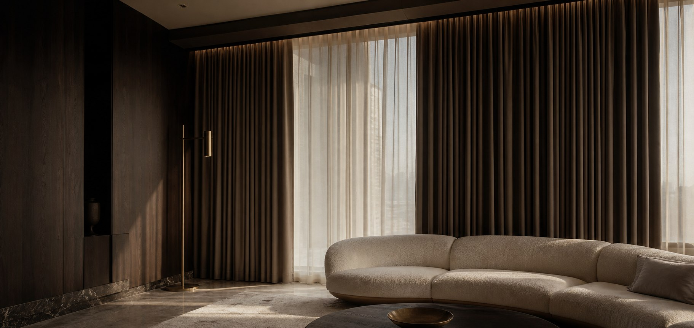

01 / Residential

Design-led window treatments
Rajshahi is a calm, well-planned city on the bank of the Padma, known across Bangladesh for its silk, its mangoes, and its tree-lined roads. Homes here are lived in and cared for, and the way a window is dressed says a lot about that care. A well-chosen curtain does quiet but important work: it softens strong afternoon sun, protects privacy, and gives a room its finished look.
Curtain Canvas brings interior design-focused, made-to-measure curtains to Rajshahi homes, apartments, offices, clinics, hotels, and restaurants. We start with your room, not a catalogue. Light, furniture, colors, window size, and daily routine all shape the recommendation, and we guide you through fabric, measurement, tailoring, hardware, and installation.
Rajshahi sits in the drier northwest of Bangladesh, and its climate, housing, and local taste all influence which curtains work best here.
Every space balances light, privacy, texture, and style differently. Explore the curtain types we recommend most often for Rajshahi clients.
Interior-based curtains do more than dress a window—they set the mood of the room. Designed to work with your interiors rather than compete with them, they bring light, texture, and flow into balance. Because when the curtains are right, your space doesn't just look finished—it feels alive.
01 / Residential

02 / Workspace

03 / Hospitality
Curtain options selected with Bangladesh's changing sunlight, heat, humidity, and seasonal requirements in mind.

01 / Summer

02 / Rainy

03 / Autumn

01 / Late

02 / Winter

03 / Spring
Made-to-measure curtain solutions created around your window dimensions, preferred fabric, design concept, and functional requirements.
Fabric, color, length, lining, and hardware all affect the final result, and it is easy to get one of them wrong. Our curtain consultancy takes the guesswork out of the decision.

Standard curtains are made for standard windows. Few Rajshahi interiors are standard, so we plan each curtain around the room it will hang in.
From the first consultation to the final fitting, we keep every step clear, so your curtains in Rajshahi are planned, measured, and installed with care.
Choosing curtains is about more than fabric, so Curtain Canvas pairs design-led advice with precise tailoring and careful installation for Rajshahi homes and businesses.
Common questions
Lined, blackout, and layered curtains suit Rajshahi well because of the strong summer sun and cool winters. The best choice depends on the room's direction, privacy needs, and style. A blackout curtain with a sheer layer is a popular, flexible pairing.
Light-colored curtains with a good lining reflect sunlight and reduce glare. Blackout or thick-lined fabrics work best on sun-facing windows. They won't replace cooling, but they make rooms noticeably more comfortable.
Yes. Thicker or layered curtains add a sense of warmth on cool, dry mornings and evenings. A common approach is to keep a light sheer for daytime and add a heavier curtain over it in winter.
Yes. We make curtains to your exact window measurements, with fabric, color, pleats, and finishing planned for your interior. This applies to apartments, independent houses, offices, clinics, and hospitality spaces.
Blackout curtains are a strong choice because they block light and improve privacy. Pairing them with sheer curtains gives a softer look in the daytime.
Sheer curtains give light daytime privacy while letting natural light in. For stronger privacy, especially in the evening, combine them with blackout or heavier curtains.
Start with your wall shade, flooring, and furniture. Neutral tones create a calm, spacious feel, while deeper shades add richness and contrast. A consultation helps you see options against your own room.
Curtain Canvas combines interior design-focused consultation, premium fabrics, custom tailoring, and professional installation in one service. That means fewer surprises and a finished result that fits your windows and your style.